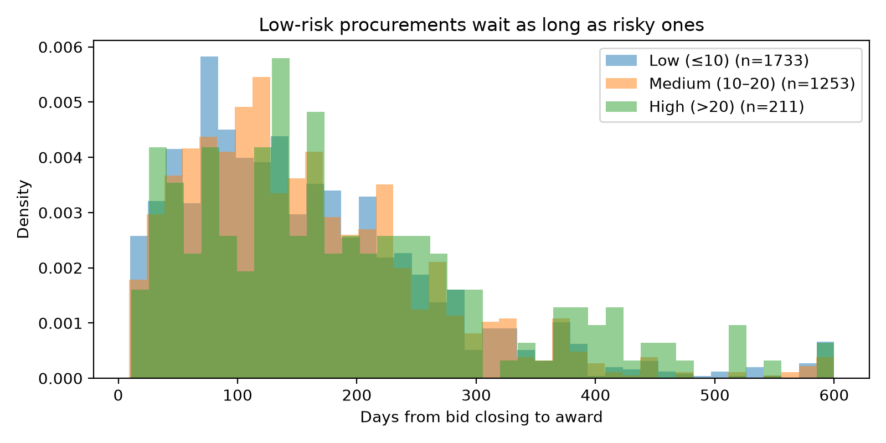

What the data shows
These are statistical risk indicators that call for review. They are not findings of wrongdoing against any entity or firm.
Awards bunch just below the official estimate
1,976 works contracts were awarded at 97–100% of the entity's estimate, where a smooth distribution predicts about 316. The excess holds under open competitive bidding (4.5×) and in all 24 robustness specifications we ran (3.4× to 12×). Possible causes are leaked estimates, estimates revised after award, or bidders anchoring on a published budget.

Recurring bidder groups with rotating winners
450 identical groups of firms bid together in three or more procurements. In 205 of them the win passes between members. The largest group of three firms bid together 255 times for a single entity, a textbook bid-rotation pattern or, at best, a closed shortlist.
Also found
Roughly a third of supplier IDs are spelling variants of the same firm (24,707 → 16,561). That has to be fixed before anyone can reliably monitor suppliers.
of procurement time comes after bids close
The median works procurement takes 206 days. Only 43 are the bidding window; 138 come between bid closing and award. Procurements with no red flags wait as long as risky ones.
